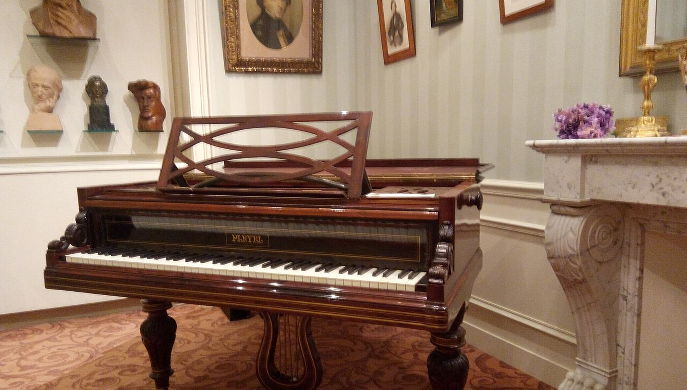
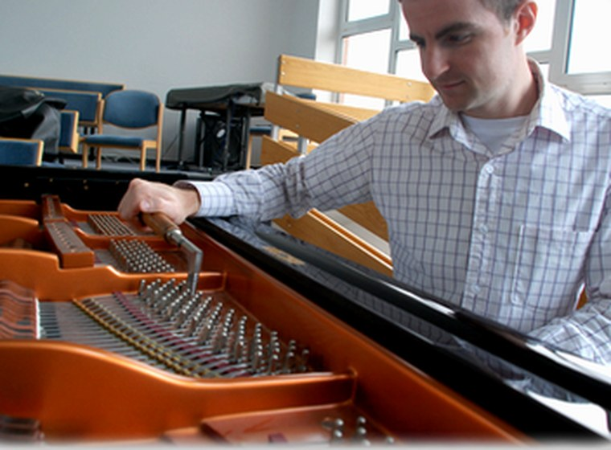
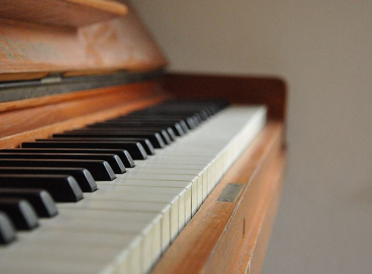
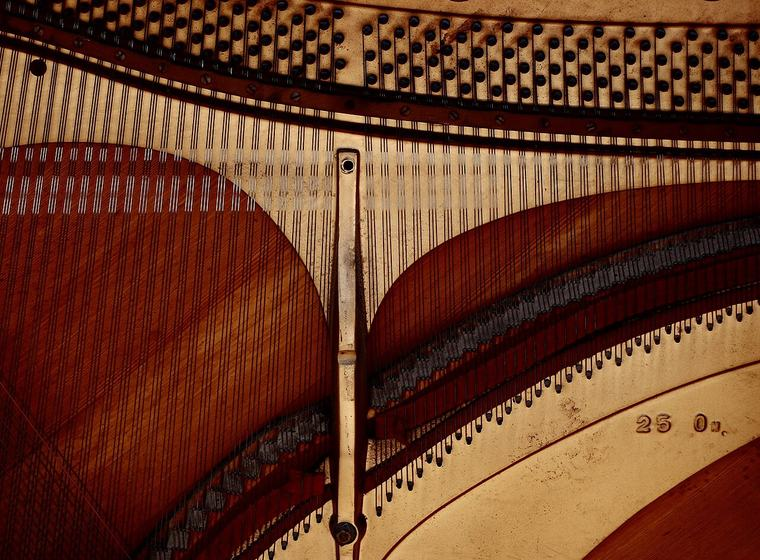
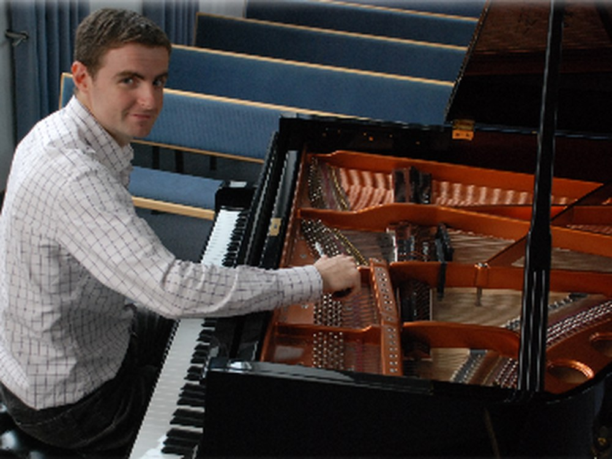

Klavierservice aus Raubach für den Westerwald
Ihr Klavier
in den richtigen Händen.
Ihr Weg zum guten Klang.
Stimmen, reparieren, an- und verkaufen — alles aus einer Hand. Artur Zaiser kommt zu Ihnen, von Raubach aus in den ganzen Westerwald.
Leistungen
Was wir für Ihr Klavier
tun können.

Klavierstimmung & Wartung
Ein Klavier möchte etwa einmal im Jahr gestimmt werden — wir kommen dafür zu Ihnen nach Hause. Auf Wunsch regulieren und intonieren wir auch die Mechanik oder bauen Stummschaltung und Luftbefeuchter ein.
Termin anfragen →Verkauf — neu & gebraucht
Sie suchen ein Klavier, einen Flügel oder ein Digitalpiano? Wir nehmen uns Zeit, das Instrument zu finden, das wirklich zu Ihnen passt — auf Wunsch samt Transport. Und wenn Sie privat kaufen möchten, werfen wir vorher gern einen prüfenden Blick auf das Angebot.
Angebote ansehen →
Ankauf & Taxierung
Ihr Klavier soll in gute Hände weiterziehen — oder Sie möchten einfach wissen, was es wert ist? Wir schauen es uns vor Ort an und sagen Ihnen ehrlich, woran Sie sind. Alles Weitere halten wir so unkompliziert wie möglich.
Instrument einschätzen lassen →
Restaurierung & Reparatur
Eine klemmende Taste, eine gerissene Saite oder ein Erbstück, das seit Jahren schweigt: Vieles lässt sich retten. Kleine Reparaturen erledigen wir oft direkt bei Ihnen daheim — und auch vor einer kompletten Aufarbeitung scheuen wir uns nicht.
Zustand beschreiben →
Über uns
„Handwerk, das man hört, bevor man es sieht.“
Westerwald-Pianoservice ist ein Familienbetrieb aus Raubach. Wer hier anruft, hat Artur Zaiser selbst am Apparat — und genau er steht später auch an Ihrem Instrument. Kein Callcenter, kein wechselndes Personal: Vom ersten Gespräch bis zum letzten Ton bleibt alles in einer Hand.
Und wir nehmen uns Zeit. Hinter fast jedem Klavier steckt eine Geschichte, oft über Generationen — deshalb hören wir erst zu, schauen genau hin und sagen Ihnen dann ehrlich, was sich lohnt und was nicht.
Servicegebiet
Wir kommen zu Ihnen. Ihr Ort ist nicht dabei? Fragen Sie einfach nach — meistens lässt sich das einrichten.
Kontakt
Erzählen Sie uns
von Ihrem Klavier.
Ob es um eine Stimmung geht, einen Kauf oder Verkauf — oder Sie gar nicht sicher sind, was Ihr Instrument braucht: Rufen Sie an oder schreiben Sie uns. Wir melden uns verlässlich zurück.